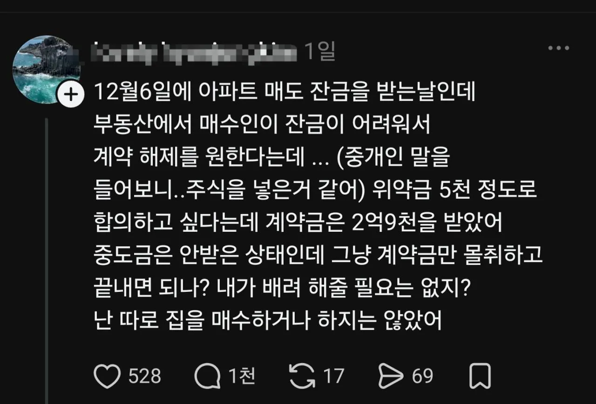

밑에 답글보면 계약대로 해야한다는 사람들도 있으나 돌려주라는 여론이 더많음.
-
계약금 20% 받았다고함: 둘다 무조건 계약 진행하겠다는 의지
-
주식으로 아파트 잔금 못칠정도로 넣었다 망한거같다고함
*반응
-매수인에게 의탁해서 돌려주는게 좋지않겠냐: 주식하다가 날린건데요?
-남의 눈에 피눈물나게하면 안된다: 매도인은요?
-칼맞는다: 본인이 주식해서 계약금날리고 칼침놓는게 정상인가?
-베풀며 살면 그 이상 돌아온다: 맞긴한데 그러면 매수인은 매도인에게 잔금좀 베푸시지, 아니면 본인이 대신 잔금 베푸시지그래요.
이런 사람이 많은거보면 계약 우습게하는 사람이 많게 느껴지는건 이상한 일이 아니다.
계약서대로하는게 정석이고 돌려준다면 그게 호의인데 돌려주는걸 정석처럼 생각하는 사람이 많음.
매수인 주식리스크까지 매도인이 떠안아야함.
(저 썰의 주작여부는 알 수 없으나 반응만 보았을때 기준)
ㅊㅊ : https://m.fmkorea.com/index.php?mid=realestate&sort_index=pop&order_type=desc&document_srl=10586700810&listStyle=webzine
계약금은 그대로 받고 대신 분할상납하게 해야지 이자는 깍아줄수 있어도 계약원금을 깍아달라는건 솔직히 양심이